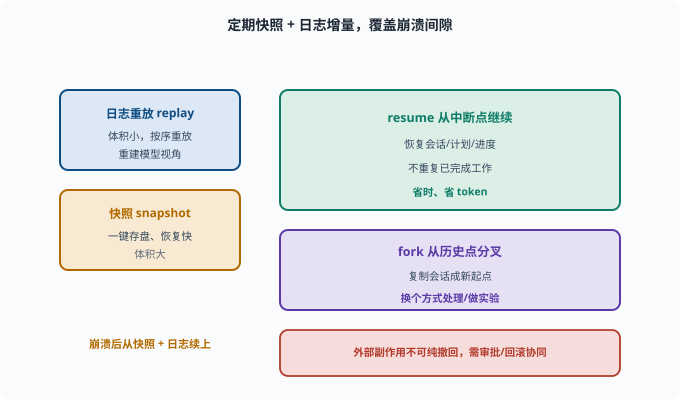

状态与恢复：崩溃后如何"续上"
目标：理解 agent 状态为何要可持久化、可恢复。读完这一页，你能说清"快照/日志重放/fork/resume"的差异，也知道为什么可追溯日志是恢复的基础。
Agent 也有"状态"
一个正在跑任务的 agent 有大量状态：
当前会话的消息（用户/助手/工具）
turn/step 走到哪了
计划（哪些步骤完成、待做）
暂存变量/中间结果
外部资源（打开的连接等）
如果进程崩溃、机器断电、或被中断，这些状态不会自己保留。状态与恢复就是解决"如何让 agent 在意外后能续上、而不是从头再来"。
三类持久化手段
快照（snapshot）：某时刻把完整状态一键存盘，崩溃后整盘恢复
事件日志重放（replay）：记录 append-only 事件，恢复时按序重放重建状态（[09-05](09-05-session-log.md)）
两者结合：快照做"检查点"，日志补"断点之后"的增量
快照快但体积大；日志体积小但要重放。工程常结合：定期快照 + 日志增量覆盖间隙。

上图把"崩溃后如何续上"浓缩成一对互补手段：日志重放（体积小、按序重放、重建模型视角）与快照（一键存盘、恢复快但体积大），两者结合用"定期快照 + 日志增量"覆盖崩溃间隙。右侧则是建立在可重建基础上的两种操作：resume 从中断点继续、不重复已完成工作，fork 从某条历史会话复制出一个新起点做实验。下方同时提醒，外部副作用往往无法纯撤回，需要审批与回滚协同。
为什么"可追溯日志"是恢复的地基
因为"model-visible ⟺ logged"（09-05），会话日志天然记录了重建模型视角所需的全部信息：
重启 agent → 读日志 → 恢复消息序列 → 知道模型此前看到过什么 → 继续
没有日志，恢复就无从谈起——你不知道"之前处理到哪、模型看到过什么"。
resume：从中断点接着干
resume（续跑）：不是从头重跑整个任务，而是从中断处继续：
恢复会话（消息、计划、进度）
从"失败/中断的那一步"重新尝试，或跳到下一步
不重复已完成的工作
这省时间、省 token、用户体验也好（"我在刚才的地方继续"）。
fork：从某个历史点"分叉"
除了 resume 这种"沿原路续跑"，agent 状态还支持 fork（分叉）——思想上正是 02-05 里 Git 分支的翻版：
基于某条历史会话"复制出一个新会话"，从那里开始不同走向
用途：用户想"换个方式处理""对这条轨迹做实验"
fork 依赖历史可重建：只要日志在，任何历史点都能作为新起点。
在 deepseek-harness 里看 fork 的真实语义
packages/core/session/src/index.ts 的 ctx.sessions.fork(source, boundary?, childId?) 把上面的思想落成精确的 API：
source 要分叉的会话（活对象或其 id）
boundary 截到哪条事件为止（seq）；不传 = 截到最后一条
childId 新会话的 id；不传则自动分配
实现就是"取前缀 + 重新播种"：把源会话的日志截到 boundary，作为 seed（种子事件）创建一个全新会话，同时在 header 里记下 parentSession（父会话）与 seedLength（种子长度）——新会话从诞生起就知道自己"从哪条轨迹的哪个点分出来"。注意 fork 的拒绝码也值得读：OPEN_TURN 表示截断点落在一个还没闭合的 turn 里、INVALID_BOUNDARY 表示截断点不存在——分叉必须落在事件的完整边界上，这与 Git 只能在提交点开分支是同一个道理。
恢复失败与兜底
恢复不是万能的，要考虑：
外部副作用：命令可能已执行了一半，无法"纯撤回"（需审批/回滚，[09-06](09-06-scope-permission.md)）
资源上下文：已关闭的连接/临时文件恢复不回来
一致性：部分成功的状态要标记"进行中"，别误报"已完成"
所以恢复要和"可逆操作、审批、状态标记"协同，别指望日志能无中生有还原外部世界。
思考题
- 一个运行中的 agent 有哪些状态？
- 快照、事件日志重放、二者结合各有什么特点？
- 为什么可追溯日志是恢复的基础？
- resume 和 fork 分别是什么？
- 恢复不能解决哪些问题？为什么？
参考答案
- 当前会话消息、turn/step 进度、计划状态、暂存变量/中间结果、外部资源连接等。
- 快照一键存盘、恢复快但体积大；事件日志重放体积小但需按序重放；二者结合=定期快照+日志增量，兼顾速度与完整且覆盖间隙。
- 因为日志记录了模型视角的全部输入（model-visible ⟺ logged），重启后读日志即可重建消息序列与进度，从而知道"之前的模型看到过什么"，才能继续。
- resume 是从中断处接着干（恢复会话+从断点继续/跳过已完成）；fork 是基于某条历史会话复制出一个新会话，从那里走向不同分支。
- 外部副作用（命令执行一半无法纯撤回）、已关闭的资源/临时文件、部分成功的一致性——因为日志只能重建"Agent 视角"，不能凭空还原外部世界，需配合可逆操作、审批与状态标记。
下一步
- 想把这些概念全都动手 → 10 实战 Lab。
- 想守住安全/权限边界 → 11 安全与治理。
- 想复习会话日志根基 → 09-05 会话日志与可追溯。